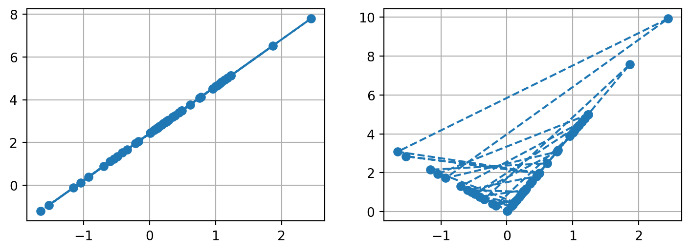
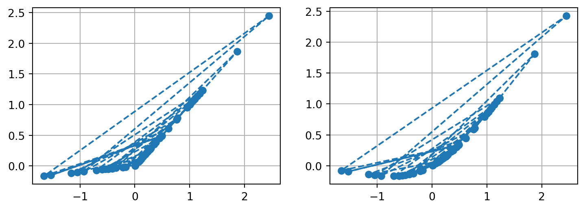

Code
import torch
import torch.nn.functional as F
import matplotlib.pyplot as plt
torch.manual_seed(17)
def linear(a, b, x):
return a*x + bIn the last two posts, I have gone over the concept and process of training GANs. I made it seem so straightforward, but reality is harsher. Recall that for GANs, we are training two neural networks at once, and these two compete with each other to mutually improve. Much like real life, if one competitor is too good, the other will not learn anything, if the at point before the end the Generator or the Discriminator becomes too good (or the other becomes too bad), then training breaks down. Thus, training GANs is highly unstable, and any way to ensure smoother training is encouraged.

Activation function is a requirement for neural networks’ ability to approximate complex function. Without it, a neural network will become just another linear function.
import torch
import torch.nn.functional as F
import matplotlib.pyplot as plt
torch.manual_seed(17)
def linear(a, b, x):
return a*x + bx = torch.randn(50)
fig = plt.figure(figsize=(9,3))
ax1 = fig.add_subplot(121)
ax2 = fig.add_subplot(122)
ax1.plot(x, linear(.5, 4, x) + linear(3.56, -5.32, x) + linear(-1.86, 3.74, x), 'o--')
ax2.plot(x, torch.relu(0.5*x) + torch.relu(3.56*x) + torch.relu(-1.86*x), 'o--')
ax1.grid()
ax2.grid()
plt.show()
We all starts with the sigmoid function in a binary cross-entropy problem. However, sigmoid, together with tanh, leads to the “vanishing gradient” problem. When the output value of gets close to 0 or 1 for sigmoid (or -1 or 1 for tanh), the gradient gets close to 0, so the weights either are updated very slowly or stop learning altogether. That was when ReLU came into play: the function has a clear, positive gradient when output value is greater than 0, while the bend makes sure that ReLU stacking on each other can produce a curve.

However, the joy ReLU brought came to halt when “dying ReLU” problem was reported. Suppose we have an output smaller or equal 0, then our derivative will be 0. The 0 derivative on the node means that it will not get updated, and that’s the end for it. Worse, the previous components connected to the node are affected as well, so the whole structure of our neural network will be “dead”. To fix, we have the variation: LeakyReLU. For LeakyReLU, the output value below 0 is not set at 0, but is multiplied by a constant (such as 0.2). Gradient for such value will still be non-zero, provide information to update the weights.
Another, more advanced variation is GeLU, where the output is multiplied with i.e. weighted by its percentile. Sounds too complicated? Look at the formula: \[GELU(x)=x*P(X<x)=x*\Phi(x)\] for \(X\) ~ \(\mathcal{N}(0, 1)\) GELU has been successfully applied in Transformer models such as BERT, GPT-3, and especially in CNN such as ConvNeXts. (Yeah, look at ConvNeXts - it started with a ResNet, the great ConvNet architecture, then the authors slowly introduced all the modern training tricks, until the result surpassed the Swin Transformer in the cheer of CNN-backer/Transformer-haters. Okay, that was eaxaggerating, but still…)
fig = plt.figure(figsize=(9,3))
ax1 = fig.add_subplot(121)
ax2 = fig.add_subplot(122)
ax1.plot(x, F.leaky_relu(x, negative_slope=0.1), 'o--')
ax2.plot(x, F.gelu(x), 'o--')
ax1.grid()
ax2.grid()
plt.show()